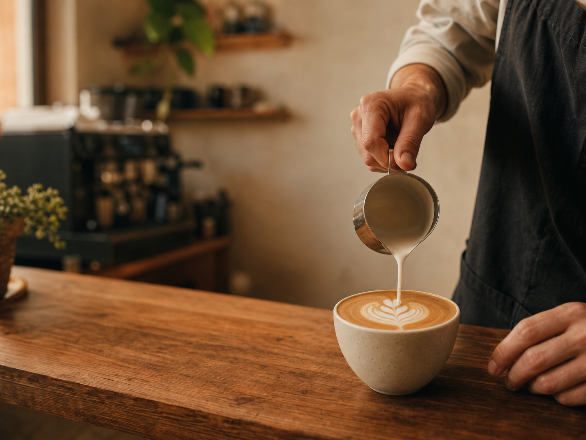
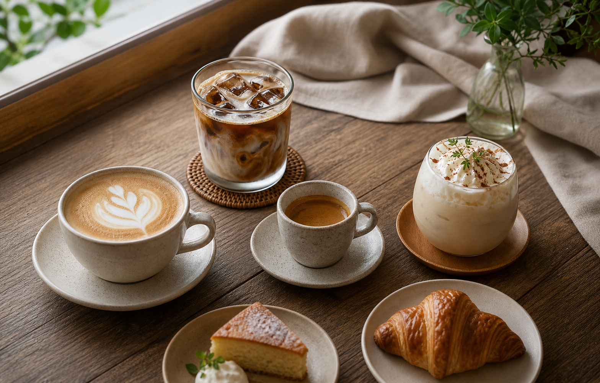
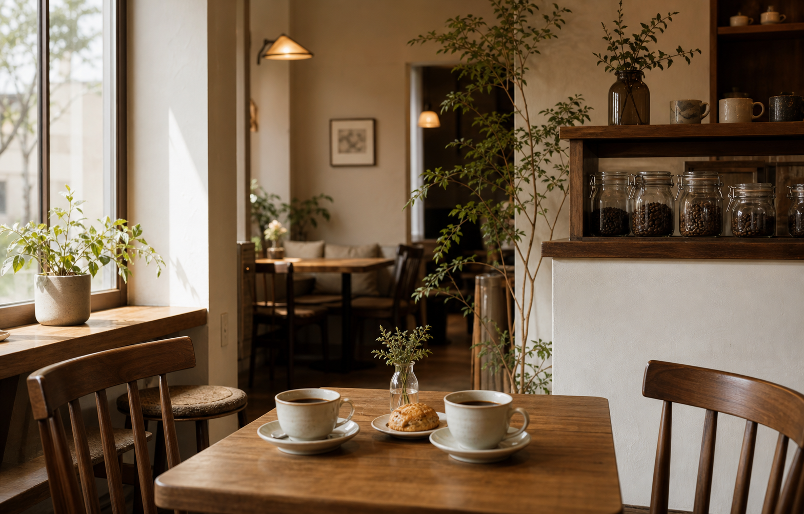

01
シグネチャーラテ
深煎りブレンドに、なめらかなミルク。ほっとしたい時間の一杯です。
SPECIALTY COFFEE & MORNING PLATE
KOMOREBI COFFEEは、駅から少し歩いた路地にある小さな自家焙煎カフェ。 朝は焼きたてクロワッサンとラテ、昼は季節のデザート、夕方は静かな読書時間をどうぞ。

FEATURED MENU
深煎りブレンドに、なめらかなミルク。ほっとしたい時間の一杯です。
すっきり軽い飲み口。午後の作業や散歩帰りにも合う人気メニュー。
旬の香りを少しだけ。甘すぎず、デザートのように楽しめます。
毎朝焼き上げる香ばしいクロワッサンと、好みのドリンクをセットで。
OUR STORY

豆の香り、ミルクの甘み、焼き菓子のバター感。どれか一つが主張しすぎないよう、 毎日の気温や焙煎具合に合わせて味を整えています。
SHOP INFO
店内利用はもちろん、コーヒー豆と焼き菓子のテイクアウトも可能です。 少人数のため、週末のカフェ利用は事前予約がおすすめです。

混み合う時間帯は、席だけの予約も受け付けています。焼き菓子の取り置きもお気軽に。
相談するRESERVATION
来店予約、テイクアウト、豆の購入相談はフォームまたはお電話で承ります。